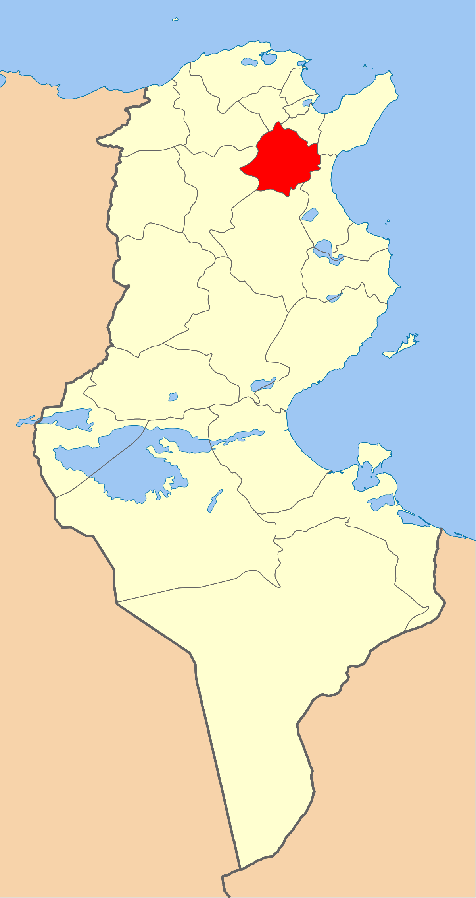
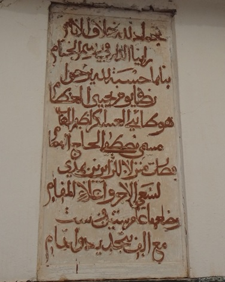
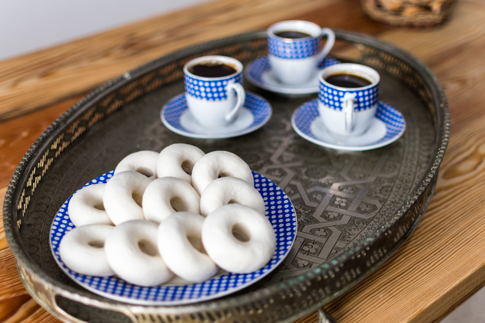
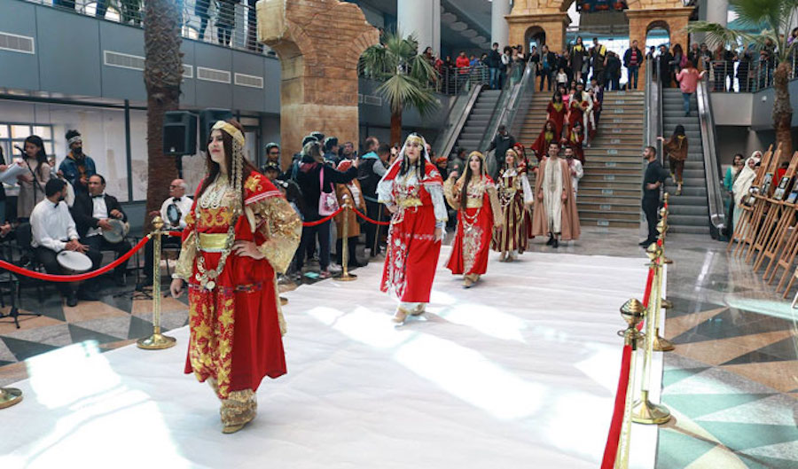
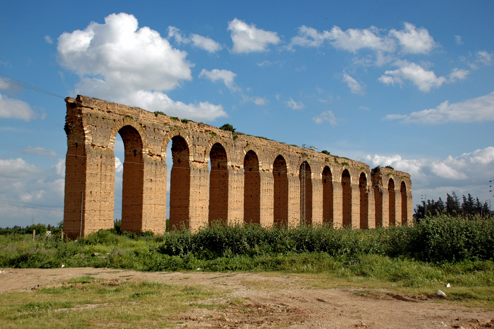
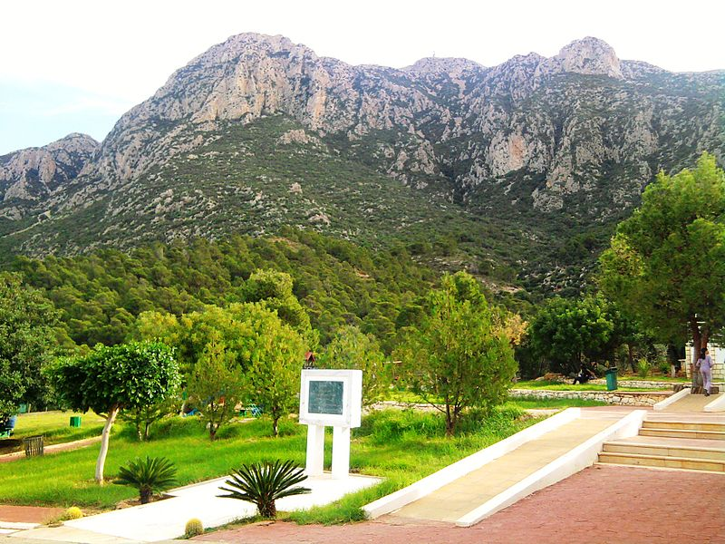

Zaghouan
Zaghouan est une ville du nord de la Tunisie et le chef-lieu du gouvernorat du même nom. À l'emplacement de l'antique Ziqua, dont il ne subsiste qu'une porte triomphale, Zaghouan est un bourg aux rues escarpées et coupées de petites places offrant des échappées sur la plaine. La ville est connue pour ses roses, notamment l'églantier (ancêtre botanique de la rose), qui étaient cultivées par les musulmans andalous (Morisques) chassés d'Espagne au xviie siècle lors de la Reconquista.
Le temple des eaux
Hammam Zriba
Montagne de Zaghouan
Sidi Bou Gabrine
Quelques chiffres
Superficie
2 768 km²
Nombre de maisons
7000
Habitants
20 000
Localisation
SLe gouvernorat, situé à 51 kilomètres de la capitale, est limité par les gouvernorats de Ben Arous et La Manouba au nord, Sousse et Kairouan au sud et Siliana et Béja à l'ouest. Administrativement, il est découpé en six délégations, sept municipalités, six conseils ruraux et 48 imadas.La température moyenne y est de 18 °C et la pluviométrie annuelle varie entre 350 et 550 millimètres selon les délégations.

Histoire
Zaghouan est l’une des plus importantes villes fondées par les Andalous en Tunisie vers 1610. Les principaux monuments de la vieille ville remontent au XVIIe siècle : mosquées, zawiyas, hammams, fontaines, souks, etc. De même les immigrés andalous avaient compris tous les avantages à tirer de ce site abondamment alimenté en eau par des sources intermittentes. Ainsi ils créèrent des jardins ceinturant la cité et développèrent des activités grandes consommatrices d’eau : teinturerie, tannerie, huilerie, meunerie dont les moulins étaient actionnés à l’énergie hydraulique. Dans cet article nous présentons quelques bâtiments et établissements évoqués par des documents, pour la plupart inédits, des archives locales notamment les actes de waqf. Nous nous arrêtons sur certains aspects relatifs à l’intérêt historique et architectural de tels monuments.

Culture

hover me
hover me
hover me
hover me